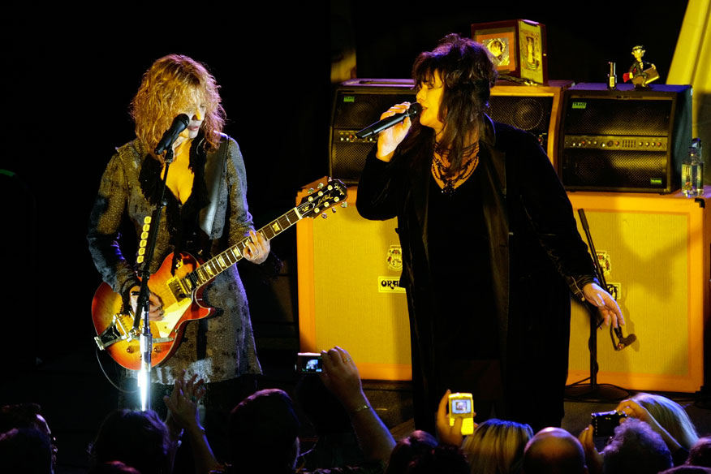
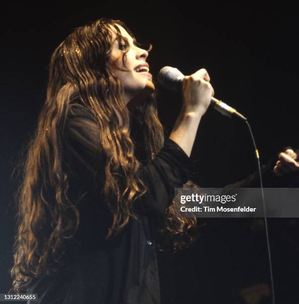

| Presentación | |
|---|---|
|
Hola, soy Giovanna Yapu. Me apasiona la música de los años 80, especialmente el rock alternativo y las baladas. Una chica que disfruta de la música de los años 80 no solo aprecia los ritmos y melodías pegajosas, sino que también valora la autenticidad y el sentimiento profundo que caracterizan a esta época. Las letras de las canciones de los 80 suelen contar historias significativas y emocionales, permitiendo a los oyentes conectarse de manera personal y reflexiva. Además, la diversidad musical de la década, desde el rock y el pop hasta el new wave y el heavy metal, ofrece un abanico de experiencias sonoras que alimentan su pasión por la música. Más allá de la música, esta chica encuentra inspiración en artistas icónicos como Joan Jett, cuyo estilo rebelde y letras empoderadoras la motivan a ser auténtica y valiente en su propia vida. A través de sus canciones, estos artistas transmiten mensajes de fuerza, resiliencia y libertad, valores que ella adopta y aplica en su día a día. La música de los años 80 no es solo una forma de entretenimiento para ella; es una fuente de inspiración y una parte integral de su identidad. |
|
| Introducción | |
|---|---|
|
La música de los años 80 es un tesoro que sigue tocando corazones. Para quienes aman esta década, no es solo por nostalgia, sino por su innovación y diversidad musical. Artistas y bandas de esta época redefinieron la industria con sus letras profundas y sonidos únicos. Entre los íconos de los años 80, Joan Jett se destaca por su poderosa voz y actitud rebelde. Su canción "I Love Rock 'n Roll" es un himno que captura la esencia del rock, celebrando la pasión y libertad que la música ofrece. Joan Jett rompió barreras en una industria dominada por hombres, mostrando que las mujeres también pueden ser líderes en el rock. Para concluir, te presentaré algunas de las bandas de rock más emblemáticas de los años 80. Estos artistas, junto a Joan Jett, definieron una era y dejaron un legado imborrable en la historia de la música. ¡Prepárate para un viaje musical inolvidable!. |
| Géneros Musicales | |
|---|---|
| Género | Descripción |
| Rock | El rock de los años 80 fue una época de evolución, con bandas como Queen, Guns N' Roses y The Rolling Stones redefiniendo el género. El rock de esta época abarcó desde el glam rock y el punk rock hasta el hard rock, creando una diversidad de sonidos y estilos que cautivaron a millones. |
| Pop | El pop de los años 80 estuvo dominado por artistas como Michael Jackson, Madonna y Prince, quienes crearon algunos de los éxitos más memorables de la década. Este género se caracterizó por su accesibilidad y atractivo comercial, con melodías pegajosas y producciones innovadoras. |
| New Wave | El new wave combinó elementos del punk rock y la música electrónica, con bandas como Depeche Mode y Duran Duran liderando el movimiento. Este género se destacó por su uso de sintetizadores y ritmos dance, creando un sonido futurista que resonó con la juventud de la época. |
| Heavy Metal | El heavy metal ganó popularidad con bandas como Metallica y Iron Maiden, que llevaron el género a nuevas alturas. Con sus guitarras distorsionadas y ritmos contundentes, el heavy metal de los años 80 se convirtió en un fenómeno global, atrayendo a una legión de fanáticos devotos. |
| Artistas Destacados | ||||
|---|---|---|---|---|
| Artista | Descripción | Imagen | Audio | Video |
| Joan Jett | Joan Jett es una icónica cantante y guitarrista conocida por su estilo rebelde y sus poderosas actuaciones en vivo. Conocida por éxitos como "I Love Rock 'n Roll", Joan Jett ha dejado una marca indeleble en la historia del rock. | |||
| Heart | Heart es una banda de rock estadounidense formada por las hermanas Ann y Nancy Wilson. Conocidas por su poderosa voz y su habilidad para mezclar rock y folk, Heart ha creado algunos de los himnos más memorables de los años 80. |  | ||
| Alanis Morissette | Alanis Morissette es una cantante y compositora canadiense que se destacó en los años 90, pero su influencia y estilo se remontan a los años 80. Con su álbum "Jagged Little Pill", Alanis se convirtió en una de las voces más emblemáticas del rock alternativo. |  | ||